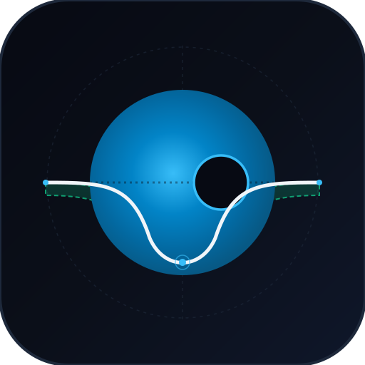

Observatorium Fotometri BLS & Split Conformal Prediction Garansi Matematis 95%
Model machine learning standar sering mengalami overconfidence pada data ber-noise tinggi. Dengan Split Conformal Prediction, engine ini memberikan garansi matematis bahwa label sebenarnya berada di dalam himpunan prediksi \( C(X) \) dengan probabilitas minimal \( 1 - \alpha = 95\% \).
Menampilkan pembesaran kurva ingress dan egress transit (±2x durasi) untuk verifikasi bentuk kurvatur limb darkening Mandel-Agol.
Memeriksa seluruh fase orbit [-0.5, +0.5] untuk mendeteksi ada tidaknya Gerhana Sekunder (ciri khas sistem bintang ganda berinteraksi).
| Target NASA | Tipe Astronomis | Periode | Kedalaman | Ground Truth | Himpunan Prediksi C(X) | Status Validasi |
|---|